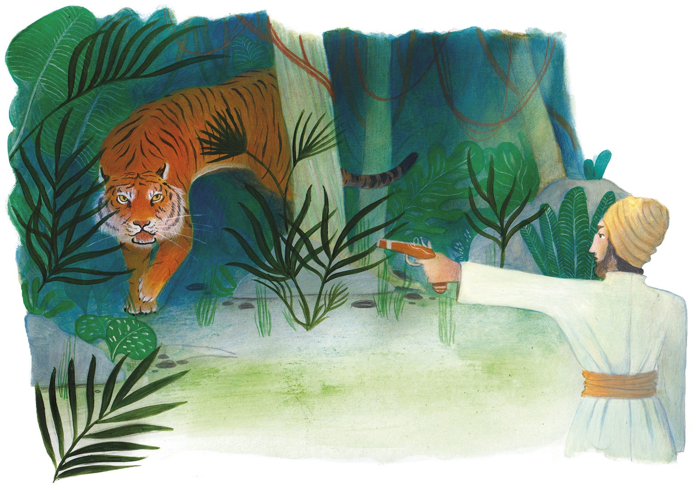
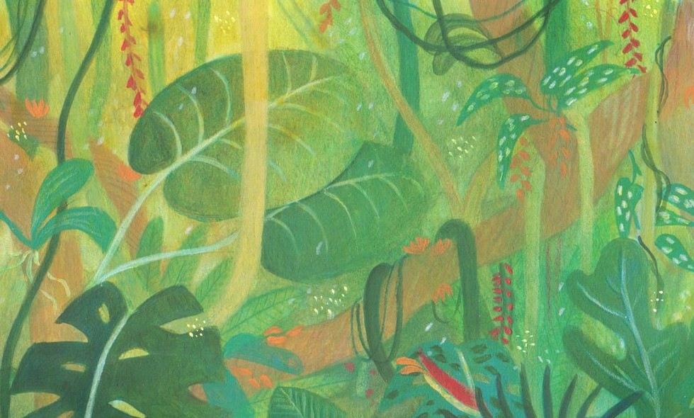
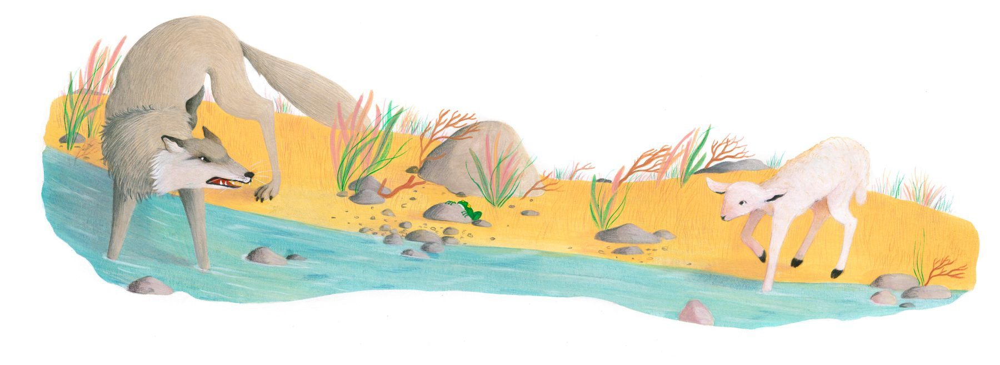
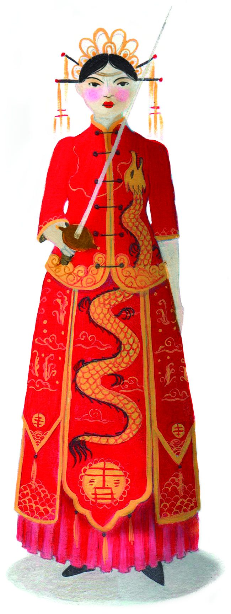
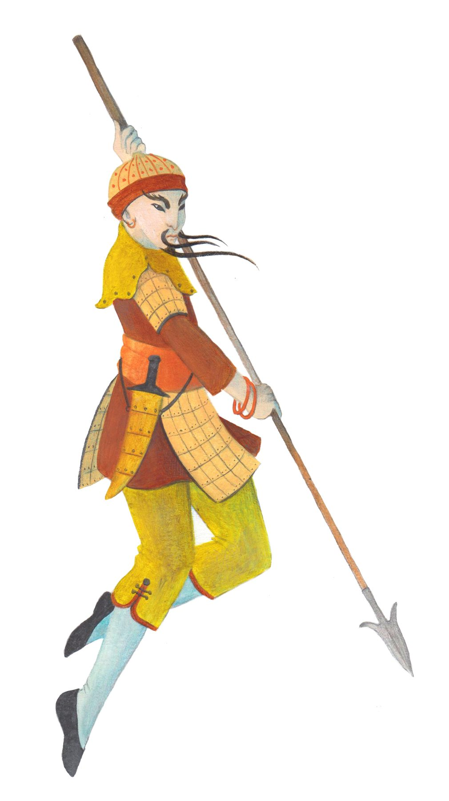
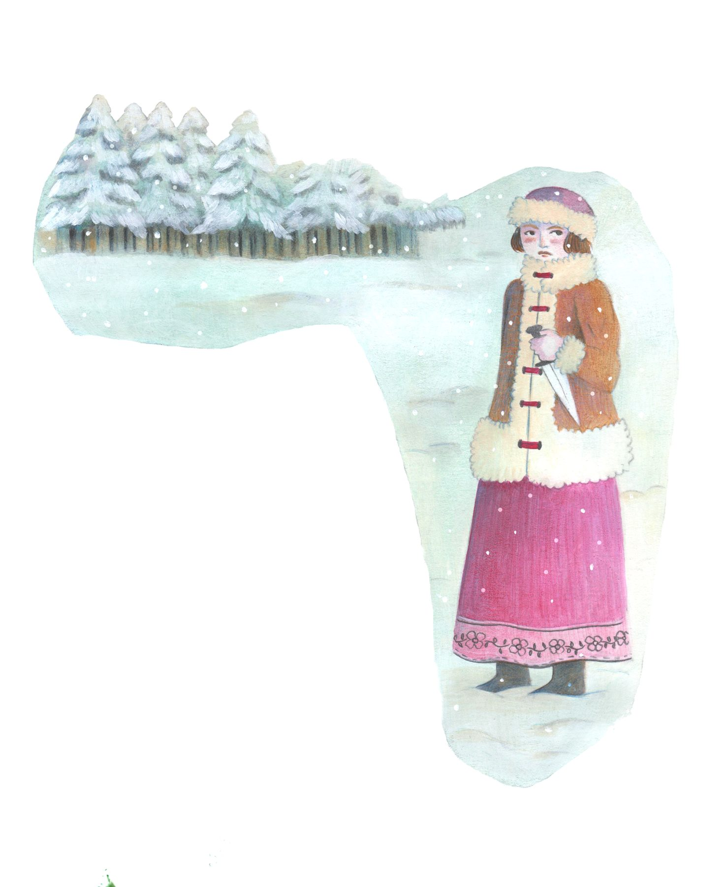

Serie di illustrazioni realizzate per il volume scolastico Vivace, edito da Zanichelli. Le tavole accompagnano i testi scolastici con una narrazione visiva ricca di dettagli, spaziando da scene classiche e letterarie a contesti naturalistici e storici, pensata per stimolare l'immaginazione e l'apprendimento degli studenti.




